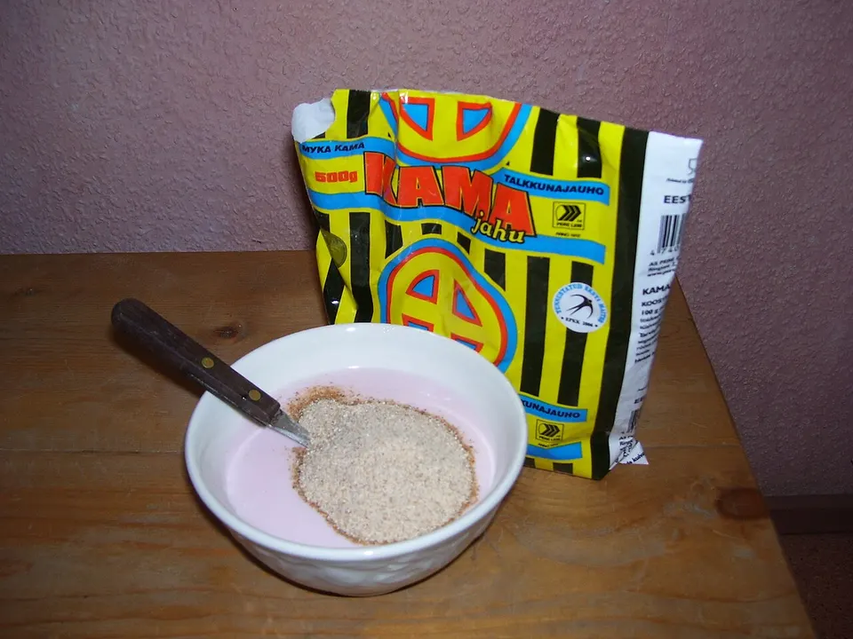
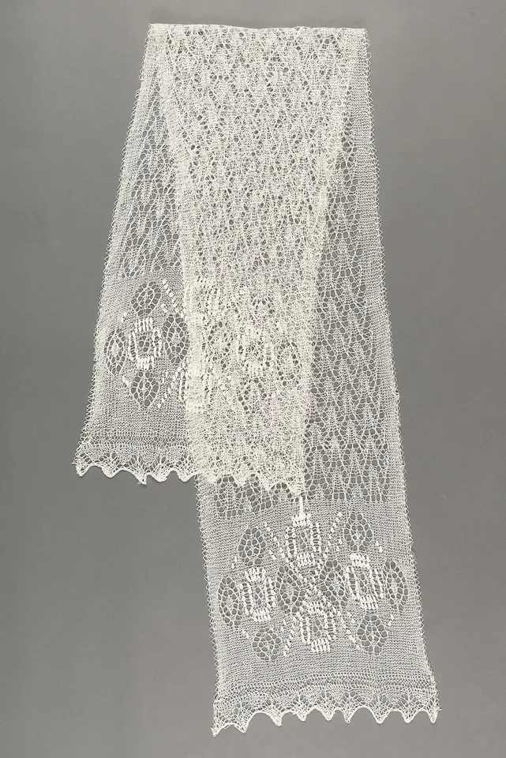
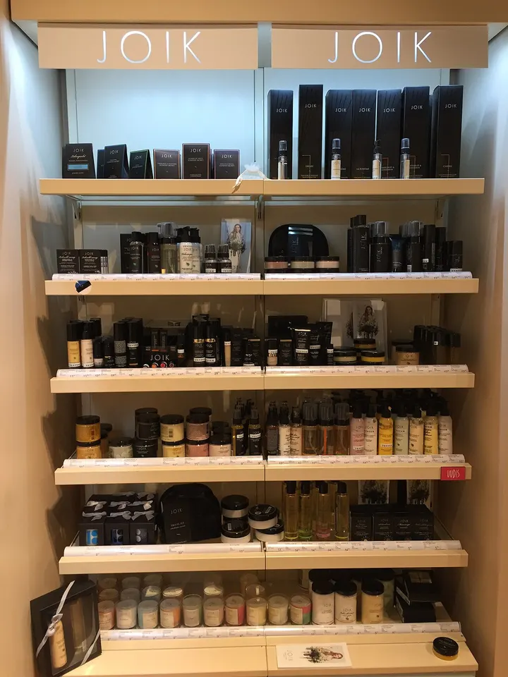
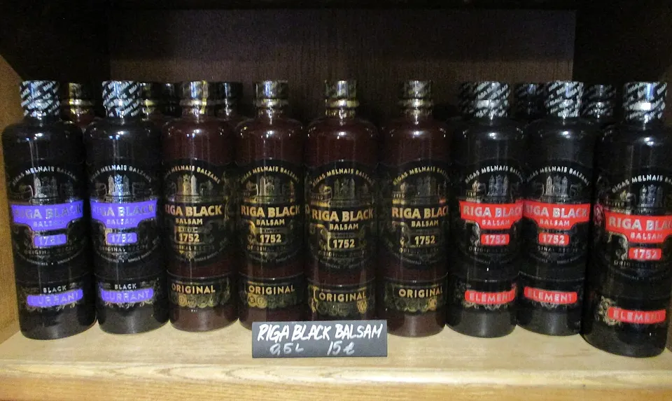
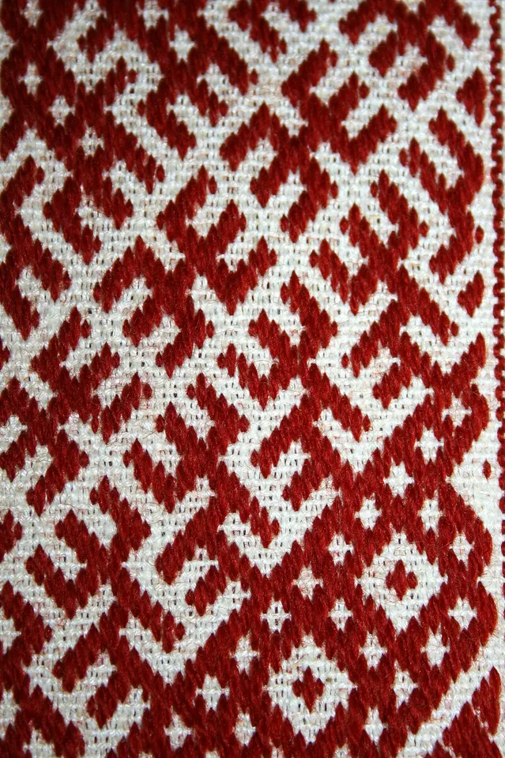
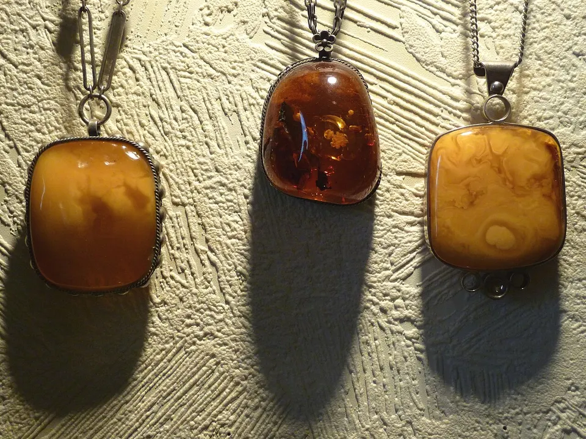
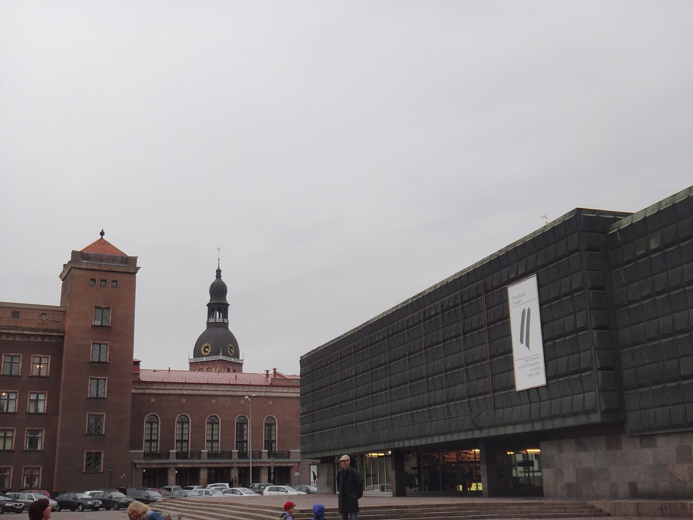
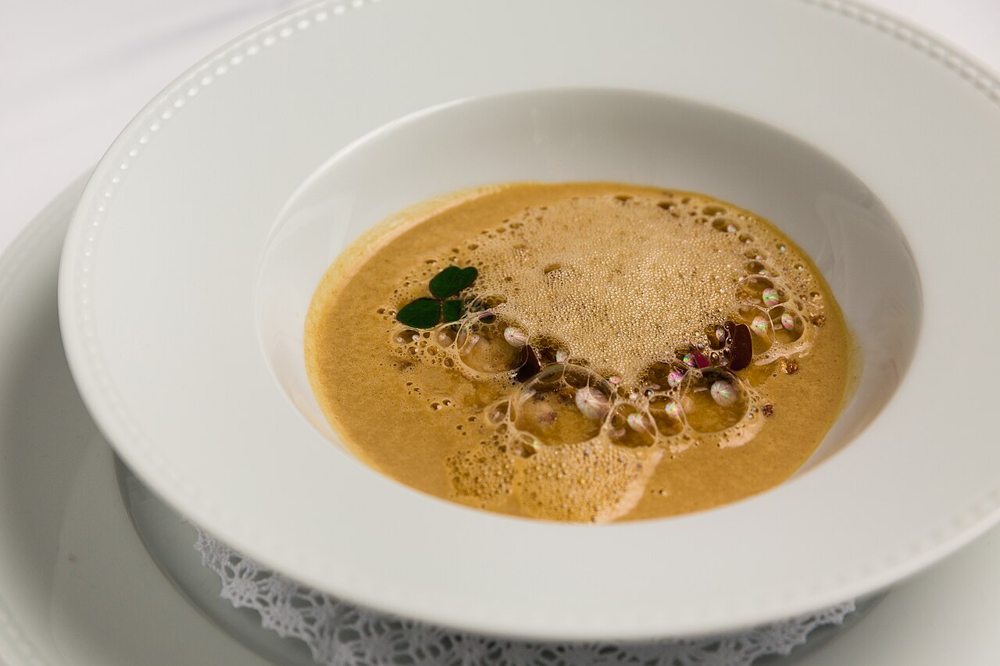
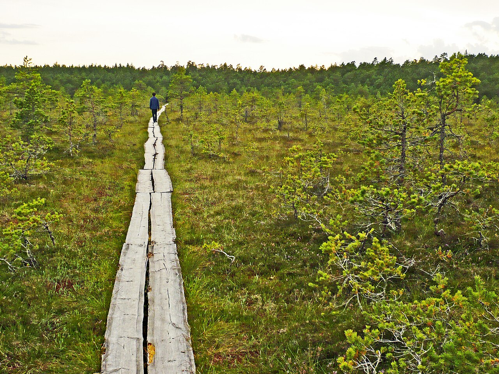

탈린 리가
확인- 수단
- 버스 · Lux Express·FlixBus 직행 버스
- 소요
- 약 4시간 25분
- 환승
- 직행
3시간 40분~4시간 30분. 기차는 발가에서 갈아타며 하루 1회 연결 수준입니다.
발트 3국
Tallinn – Riga – Vilnius
중세 탈린, 아르누보 리가, 바로크 빌뉴스. 세 수도를 4시간 간격으로 잇는 발트 기본 코스.


유레일·국내외 가이드가 공통으로 추천하는 발트 종단 동선입니다. 헬싱키 경유로 탈린에 들어가 버스와 열차로 남쪽으로 내려가고 빌뉴스에서 출국합니다. 세 도시 구시가지가 모두 유네스코 세계유산입니다.


지도: © OpenStreetMap 기여자
현지 8박 9일 · 탈린 3박 → 리가 3박 → 빌뉴스 2박
도착 인천 → 탈린 공항. 도착일은 숙소 주변 위주로 가볍게.
비루 문 → 시청 광장 → 톰페아 언덕(알렉산드르 네프스키 대성당) → 코흐투오차·파트쿨리 전망대 → 성벽 길.
여름에는 밤 10시가 넘어도 밝습니다.
숙박: 탈린
카드리오르그 궁전·쿠무 미술관 → 텔리스키비 창작 지구 → 발티 야마 시장.
숙박: 탈린
레누사담 해양박물관 → 피리타 해변, 또는 라헤마 국립공원 당일 투어.
숙박: 탈린
이동 탈린 → 리가 · 버스 약 4시간 25분 확인
검은머리전당 → 성 베드로 교회 전망대 → 리가 대성당 → 삼형제 건물 → 스웨덴 문.
리가 블랙 발삼을 커피나 주스에 타서 맛보세요.
숙박: 리가
알베르타 거리 아르누보 건축 → 자유 기념탑 → 중앙시장(비행선 격납고) → 모스크바 지구 벽화.
숙박: 리가
유르말라 해변(전철 30분) 또는 시굴다·투라이다 성(기차 1시간 10분), 룬달레 궁전은 투어로.
숙박: 리가
이동 리가 → 빌뉴스 · 기차 약 4시간 5분 확인
새벽의 문 → 필리에스 거리 → 빌뉴스 대학 → 대성당 광장 → 게디미나스 탑 일몰.
세 십자가 언덕에서 구시가지 전경이 가장 잘 보입니다.
숙박: 빌뉴스
우주피스 "공화국" 예술 지구 → 성 안나 교회 → 오후에 트라카이 호수성(버스·기차 약 30~40분), 키비나이 맛보기.
숙박: 빌뉴스
오전에 못 본 곳을 둘러보고 공항으로 이동합니다. 귀국편은 대부분 다음 날 한국에 도착합니다.
3시간 40분~4시간 30분. 기차는 발가에서 갈아타며 하루 1회 연결 수준입니다.
열차 약 4시간. 버스는 편수가 더 많고 4시간 안팎입니다.
국경 세 나라 모두 솅겐 지역입니다.
헬싱키(핀에어)에서 약 30분 비행 또는 페리 2시간. 이스탄불·프랑크푸르트 경유도 가능합니다.
헬싱키·바르샤바·이스탄불·프랑크푸르트 등에서 1회 경유.
6·7·8월
11월, 1~3월(춥고 오후 4시 전에 해가 짐)
6월 하지(성 요한 축제) 무렵이 가장 밝고 축제가 많습니다. 12월 탈린·리가 크리스마스 마켓도 유명합니다.
지나가는 나라마다 머무는 기간에 맞춰 골랐고, 비슷한 상품(와인끼리, 꿀끼리 등)은 하나만 넣어 10개 이내로 추렸습니다. 기간 탭을 바꾸면 도시에 맞게 다시 고릅니다.








카드를 누르면 나라별 쇼핑·기념품 페이지에서 구매처·반입 유의사항·사진 출처를 볼 수 있습니다. 사진은 Wikimedia Commons 자유 라이선스 사진입니다.


장기(8~9박) · 4개국 · 추천 6·7·8월
인천–헬싱키 직항을 살려 페리로 발트해를 건너는 코스.



초장기(11~12박) · 4개국 · 추천 6·7월
탈린에서 바르샤바까지 발트해 동쪽을 따라 내려오는 12박 안팎의 장거리 코스.


단기·중기(4~5박) · 2개국 · 추천 12월
2019년 유럽 최고 크리스마스 마켓에 뽑힌 탈린과 리가를 잇는 짧은 겨울 여행.



단기(3~4박) · 2개국 · 추천 6·7·12월
핀에어 직항으로 헬싱키에 내려 페리 2시간으로 탈린 구시가지에 머무는 짧은 여행.
정보 확인일 2026-11-21